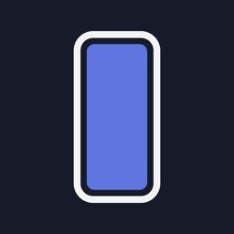

Remotedroid
Use your Android phone from your iPhone: its screen, touch and sound.
Remotedroid connects to your Android phone directly, through Android's own wireless debugging. Pair once on the same Wi-Fi; after that it works on that Wi-Fi, or through a VPN both phones already use. Nothing is installed on the Android phone and there is no account.
Needs Android 11 or later. While you mirror, a small part of scrcpy (open source, Apache License 2.0) runs on your Android phone; it is removed when you stop. Remotedroid is not made by or affiliated with Google.
Getting started
- On the Android phone, open Settings › About phone and tap “Build number” seven times. On Samsung it is under About phone › Software information.
- In Settings › System › Developer options (on Samsung, at the bottom of Settings), turn on “Wireless debugging”.
- Tap “Pair device with pairing code” and pick the phone in Remotedroid, or type its address.
Android turns wireless debugging off when the phone restarts. Remotedroid shows you the way back when that happens.
Support
A problem, a bug or an idea: destek@dyoce.com
Please include your Android phone's model and Android version.
Privacy
No account, no analytics, no ads. Your two phones talk to each other and to no one else. Details: Privacy policy
Türkçe
Android telefonunu iPhone'dan kullan: ekranı, dokunuşu ve sesiyle. Remotedroid telefona Android'in kendi kablosuz hata ayıklamasıyla doğrudan bağlanır; aynı Wi-Fi'da bir kez eşleştirirsin. Android telefona bir şey kurulmaz, hesap yoktur.
Destek: destek@dyoce.com · Gizlilik politikası